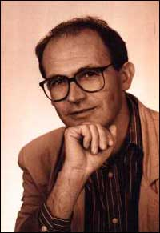

He aquí un resultado de lo más interesante e informativo de un experimento clásico que acaba de completarse. Sospecho que algunos lectores pueden verlo como un desperdicio de tiempo y dinero, un examen frívolo de una afirmación ridícula. Ciertamente no tengo esa opinión. Considere esto: a los credófilos les encanta señalar que no les satisface en lo absoluto que los científicos los perjudiquen al examinar sus tontas creencias y decirles que la ciencia tiene cosas más importantes que hacer. Esa gente merece tener opiniones de científicos legítimos para considerar; si eligen ignorar esa información, esa es su necia elección. En los Estados Unidos, al menos, todo el mundo tiene el derecho de ser estúpido o ignorante.
Pero hay algo más importante aquí, creo. Del experimento que se describirá se derivan más datos que el simple hecho de mostrar que una afirmación era absurda. Lea el relato, y vea si está de acuerdo conmigo.
Michael Lyvers, Profesor Asociado de Psicología de la Universidad Bond de Australia en Queensland, informa que el 18 de junio de este año, el popular programa de noticias “A Current Affair”, del Canal Nueve de Australia, filmó un experimento, conducido por los psicólogos Normal Barling, Michael Lyvers y Jill Harding Clark de la universidad de Bond, diseñado para verificar las afirmaciones de un “sanador psíquico” australiano bien conocido, Dennis Puffett. A Australia parece gustarle bastante este tipo de afirmación mágica, pero pocos de los que afirman estas cosas son tan extremos como Puffet, quien dice que puede aliviar el dolor simplemente manipulando las fotografías de sus objetivos, incluso cuando los “pacientes” mismos están muy lejos; incluso en otro continente. Me son familiares las alegaciones de “diagnóstico psíquico” por medio de fotografías, pero esta “curación por foto” era nueva para mí.
Los experimentadores de Bond usaron a veinte voluntarios, convocados por medio de avisos en los diarios, que dijeron sufrir dolor crónico. Se asignó a estas personas aleatoriamente a un grupo de “tratamiento” o uno de “control”, diez por grupo. Se tomaron sus fotografías, y luego llenaron un cuestionario destinado a determinar su creencia personal en la sanación psíquica, los fenómenos paranormales, la hipnosis y la medicina alternativa. A continuación, llenaron un cuestionario McGill sobre dolor (MPQ por sus iniciales en inglés). Este es un método para proporcionar una “medida cuantitativa del dolor clínico”. De esta manera, se obtuvo una evaluación inicial para empezar a comprobar la alegación de Puffett.
Haciendo esperar a todos los participantes en una habitación cercana, los experimentadores le dieron a Puffett cada foto, así como información sobre el tipo y ubicación del dolor de la persona. Todo esto fue grabado por el personal televisivo. Puffett hizo lo suyo, intentando aliviar el dolor de cada participante cuya foto recibió, y se le otorgó tanto tiempo como solicitó. Seguidamente, se hizo una segunda evaluación MPQ a cada voluntario. Se usó un sistema doble ciego; es decir, ni los participantes ni los psicólogos que los evaluaron sabían a cuál de los dos grupos pertenecía ninguno de los participantes: tratamiento o control.
(Mi pregunta aquí debe ser: a pesar de que los voluntarios no sabían a cuál grupo pertenecían, ¿sabían acaso que existían esos dos grupos? Me parece que no deberían haberlo sabido.)
Después se reunió a los participantes, y un periodista de Canal Nueve, quien también era “ciego” en relación al grupo de cada participante, les pidió que levantaran la mano si habían sentido alguna mejora en su dolor. Ocho participantes levantaron la mano; cinco de ellos eran del grupo de “control”. El análisis de los dos cuestionarios MPQ no mostraron diferencia entre los grupos de tratamiento y de control. Exactamente la mitad de los participantes en cada grupo tuvo peores mediciones y la mitad tuvo mejores mediciones en el segundo MPQ, los resultados esperados debidos al azar. Por lo tanto, los hallazgos mostraron inequívocamente que no hubo ningún efecto del “sanador psíquico”, a pesar de sus animadas afirmaciones de lo contario.
Esto es lo que puede esperarse de tan extravagante alegación, pero también hubo hallazgos muy interesantes. Los ocho voluntarios que informaron sentirse mejor luego del “tratamiento” mostraron, en un nivel estadísticamente significativo, una creencia mayor en la medicina alternativa, en comparación con los doce participantes que dijeron no sentirse mejor. Más interesante aún, el MPQ mostró correlación alta y estadísticamente significativa con la creencia de los voluntarios que se sentían mejor en la medicina alternativa, los fenómenos psíquicos, la sanación psíquica, la hipnosis y los alegatos de sanación psíquica de Puffet. Por lo tanto, ya estuvieran en el grupo de “sanación” o en el de “control”, aquéllos que tenían fuertes creencias en esos cinco asuntos altamente dudosos tendieron a mostrar cambios positivos en el MPQ durante el transcurso del experimento, mientras que aquéllos que no compartían esas creencias no los mostraron.
Estos experimentos indican que los informes de la llamada “sanación psíquica” son el resultado de una especie de efecto placebo que depende fuertemente del grado de creencia de los sujetos en tales afirmaciones. Así que hemos aprendido de lo que ya esperábamos, que la alegación de Puffett es espuria; ahora sabemos que la gente posiblemente se sentirá mejor, incluso cuando la trata un farsante.
Pero el problema que veo es que, como he dicho tantas veces anteriormente, el objetivo de la intervención médica debería ser resolver el problema, no sólo paliar la incomodidad… aunque esta sea con frecuencia la única acción que se le puede ofrecer a un paciente. Sentirse mejor no es necesariamente estar mejor, y no debería haber confusión en el paciente entre esas dos condiciones.
No pude resistirme. Fabio, de Brasil, me recuerda algunas definiciones del infame “Diccionario del Diablo” de Ambrose Bierce, de 1906:
Fe. n. Creencia sin evidencia en lo que nos dice alguien que habla sin conocimiento acerca de cosas sin parangón.
Corán. n. Un libro que los mahometanos tontamente consideran que fue escrito por inspiración divina, pero que los cristianos saben que es una perversa impostura, contradictoria con las Sagradas Escrituras.
Cristiano. n. Persona que cree que el Nuevo Testamento es un libro inspirado por la divinidad y que se ajusta admirablemente a las necesidades espirituales de su prójimo. Persona que sigue las enseñanzas de Cristo en tanto y en cuanto no sean inconsistentes con una vida de pecado.
Seguro que Ambrose no se preocupaba por una posible vida después de la muerte, obviamente. Un fulano interesante. Averigüe sobre él.
Un apreciado lector que permanecerá anónimo me envió esto sobre mi página reciente sobre mi ateísmo (¿o mi condición de bright?):
Re su comentario sobre religión. Sé que le gustan las citas, esta cita de Santayana es muy oportuna. “Que el temor creó los dioses es quizá tan cierto como puede serlo algo tan breve en relación con un tema tan vasto”.
No la había escuchado antes, pero me gusta mucho…
La lectora Diana Thoren me informa:
Hoy en [el programa de] Montel [Williams], alguien de la audiencia le preguntó a Sylvia [Browne] si alguna vez podía predecir cosas para sí. Ella dijo que no, ya que de otro modo no hubiera tenido tantos matrimonios fallidos. Todos rieron, y Montel dijo que tampoco podía predecir cosas para él, porque mientras más ella se acercaba a la gente, menos predicciones podía obtener para ellos. Luego Sylvia dijo: “Mientras más te quiero, menos veo”. Conveniente, ¿no le parece?
Sí, Diana, muy conveniente. Pero eso me da una idea. Si “mientras más te quiero, menos veo”, ¿seguramente también “mientras menos te quiero, más veo”? ¡Me parece que Sylvia debería tener una excelente conexión conmigo, entonces! ¡Debería poder ver todo sobre mí, incluso si no es un día claro…!
Es el día número 885 desde que accedió por primera vez a hacer la prueba…
Gracias al lector Karel de Pauw del Reino Unido nos llega esta noticia publicada sobre algunos de los productos disponibles de la farmacia de su Sainsbury local…
Magnoterapia
Por siglos, las propiedades curativas del magnetismo se han usado para alivair artritis, dolor de espalda, fatiga, insomnio, migraña y estrés y para tratar muchas otras afecciones y dolores musculares. La magnoterapia estimula el flujo sanguíneo para incrementar la absorción de oxígeno, nutrientes y productos de desecho; asistiendo a la sanación natural, ayudando a combatir el dolor y reforzando la resistencia en la mayor parte de los animales de sangre caliente, incluyendo a los humanos, los caballos, los gatos y los perros.
“La energía magnética tiene un efecto benéfico en la circulación sanguínea, el flujo linfático, la producción hormonal, los nervios y los músculos.” (Dr. Ulrich Warnke, M.D.; Imanes para superar el dolor. El nuevo método curativo)
“La aplicación de un campo magnético tiene las virtudes de ser simple, libre de peligros y de bajo costo. Ofrece al profano una forma accesible de autotratamiento para las enfermedades menores de la vida diaria.” (Dra. Evelyne Holzapfel, Terapia Magnética)
Pueden verse más de estos disparates en http://www.hoopers.org.
Ahora algo de ciencia verdadera. El Planeta Rojo se está acercando a nosotros día a día, y el miércoles 27 de agosto será 69 veces tan brillante como lo era el 12 de agosto del año pasado, cuando dio un magnífico espectáculo. La última vez que Marte estuvo más cerca de la Tierra de lo que estará esta vez, fue el 12 de septiembre de 57617 antes de nuestra era. Asimismo, han pasado unos 60.000 años desde que ha estado tan cerca como estará el 27, a unos meros 55.758.005 kilómetros de distancia de la Tierra, y presentándose de forma ideal, de modo que ahora sería una gran oportunidad para familiarizarse con nuestro cercano vecino. Los que observan el cielo han estado fascinados con Marte desde hace mucho debido a su claro color rojizo y su rápido movimiento contra el fondo estrellado.
Un día marciano tiene unas 25 horas, y su año es de unos 23 meses terrestres. Tiene dos lunas pequeñas, de forma elíptica porque la gravedad no las ha vuelto redondas, como sucede con nuestra propia luna. Se llaman Fobos (“miedo” en griego), de un diámetro de 26 kilómetros, y Deimos (“terror” en griego), que tiene un diámetro de sólo 15 kilómetros. Si tiene suerte y tiene una atmósfera clara, un simple telescopio o binoculares excepcionales, debería obtener una fantástica vista de Marte, y quizá también la marca de un brillante casquete polar.
Aquí hay una foto que me envió nuestro buen amigo James McGaha, director de un observatorio privado en las afueras de Tucson, Arizona. Esta foto es notable porque fue tomada recientemente con una cámara web muy simple, y se unieron varias imágenes por computadora para producir esta imagen. Vaya a http://www.grasslands.org para ver el sitio de James.

Recibí este informe entusiasta de un lector, Adam; lo mostramos aqui sin cambios salvo las correcciones importantes *:
Tema: La Rueda Egely
Hay un interesante dispositivo llamado “Rueda Egely”. Realmente usa ondas cerebrales, las atrapa y recolecta con una antena muy especial en forma de “engranaje”, y hacen que esta antena rote continuamente, a veces muy rápido (comparado con su debilidad), ¡1-24 RPM! Se puede desarmar el dispositivo, pero no podrá encontrar nada dentro que haga girar la rueda. ¡Básicamente está vacío dentro pero la rueda ciertamente gira, mientras mejor se concentre más rápidamente lo hará! En la página web del fundador encontrará más explicación, y experimentos. También cualquiera puede reproducir este efecto en un plato transparente (de vidrio o plástico) de 1cm de profundidad lleno de agua y cualquier fragmento de “marcador” que indique que el agua se mueve. El fragmento de “marcador” puede ser cualquier cosa (ejemplo: plástico o algo así) pero tiene que estar flotando en la superficie del agua. Luego tiene que poner su mano cerca del plato, y concentrarse… y el agua rotará lentamente en el plato. ¡Increíble! Nota: esto NO es calor corporal, y NO es un efecto de (carga) electrostática.
Más información:
http://www.egely.hu/index2.htm http://www.braincourse.com/wheelform.html http://www.toolsforwellness.com/54848.html
Bien, conozco al “Doctor” George Egely por experiencias pasadas. Toda Hungría lo conoce, debido a sus pomposas declaraciones sobre dispositivos mágicos y super-ciencia. Sólo lea este extracto de su descripción del “Medidor de Vitalidad de la Rueda”, que él vende al menudeo por $159,95:
Puede usar este instrumento pequeño y útil sólo para divertirse o para obtener medidas objetivas de su propia energía vital. Sin siquiera tocarlo, puede medir usted mismo cómo su entorno personal, sus actividades y su estilo de vida influyen su nivel diario de vitalidad […]. El componente clave es una rueda de 70 mm que rota en un delicado eje propusado por su energía vital. Simplemente retire la tapa de plastico y ubique su mano en forma de copa en torno al medidor de vitalidad, rodeándolo tan completamente como pueda con sus dedos y palma. La rueda rotará según se concentre.
Señores, este es un truco muy viejo, usado por vendedores ambulantes de feria durante generaciones para convencer a las victimas crédulas de que se están mostrando “energías”. Esa ruedita girará bajo cualquier influencia, ya que no está protegida con cuidado de las corrientes de aire exteriores o del aliento del usuario. Esto es típico de tales charlatanerías, y engullido ansiosamente por el creyente.
- *
-
Alude a los errores sintácticos y gramaticales, que no hemos reproducido. [N. del T.]
En mayo de este año, la Comisión Independiente de Televisión (ITC por sus iniciales en inglés) en el Reino Unido dictaminó que dos programas, “Crossing Over” y “6ixth Sense”, se hallaban en violación del Código de Programación, pero no lo habrían estado de haberse presentado claramente como entretenimiento. El anuncio se halla en la página web de la ITC: http://www.itc.org.uk. Una revisión propuesta para el código apunta a hacer una distinción entre supuesto contacto con los muertos (lo que se consideraría “ocultismo”) y lo que podría ser aceptable bajo ciertas condiciones, incluyendo que se lo presentara claramente como entretenimiento y que se emitiera en horarios en los que se considera improbable que un número significativo de niños presenciándolo. ¿Por qué? ¿Es obsceno? ¿Los adultos pueden ver este disparate, pero los niños no? ¿Cuáles son los estándares aquí?
La redacción propuesta por la ITC para la Sección 1.10 ahora dice así:
Demostraciones reales de exorcismos o prácticas ocultas, tales como las que involucren la supuesta invocación de espíritus desconocidos o fuerzas negativas, no son aceptables en programación de no ficción, excepto en el contexto de una investigación legítima. No deberán, en ningún caso, ser exhibidos antes del horario de protección al menor. Los horóscopos, la lectura de palmas y similares prácticas “psíquicas” sólo son aceptables cuando se las presenta como entretenimiento o son el sujeto de investigación legítima. No deberían incluir consejos específicos a contribuyentes o televidentes particulares acerca de asuntos médicos o de salud o sobre finanzas personales. No deberán exhibirse en horarios en los que se espera que grandes cantidades de niños se encuentren mirando televisión.
¡Pero vamos, señores! ¿Qué es esto de la “investigación legítima”? ¡Seguramente no es una investigación de si hay algo de legítimo en los procesos involucrados! ¿El Conejo de Pascua y Cenicienta califican como temas “legítimos” de “investigación”?
Luego de una consulta en 2001, el Código de Programación de la ITC fue revisado para permitir mayor libertad para incluir creencias y prácticas alternativas en pantalla. Antes de eso, todas las demostraciones de exorcismos o prácticas psíquicas u ocultas estaban prohibidas, excepto “en el contexto de una investigación legítima”. Las reformas también estaban alineadas con las expectativas de los televidentes según lo expresaron en investigaciones encargadas especialmente, referidas a las opiniones sobre creencias y prácticas alternativas. Bueno, sigo preguntando sobre Cenicienta…
Ahora estoy en el Reino Unido, y regresaré muy pronto. Disculpen por la página corta de esta semana…

Comentarios
Comments powered by Disqus